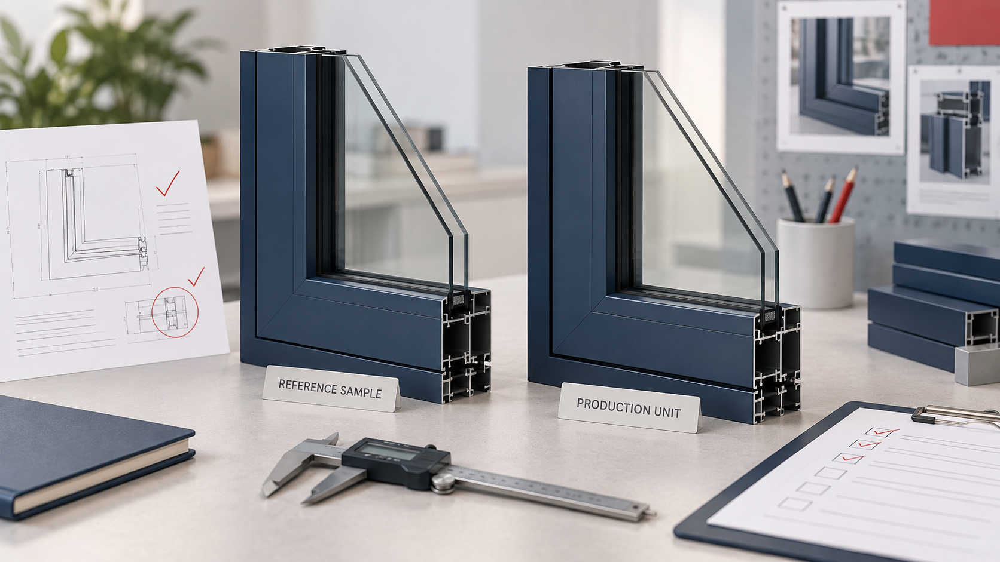

Cover illustration: AI-assisted editorial artwork. It is not a product photograph, factory record, measurement result or certification evidence.
An aluminum window sample can look straightforward on the day it is approved. Months later, the buyer may remember the colour, the factory may remember the profile, and the hardware team may remember a different handle. All three may say they are following “the approved sample.”
The solution is not a complicated system. It is a short, traceable record that identifies the sample, the agreed configuration and the changes that require a fresh decision before production.
1. Give the sample a model, date and revision
Start with the commercial model, drawing or catalogue reference, sample date and revision. State whether the reference is a complete unit, a corner sample, a colour chip or a hardware mock-up. A photograph alone does not identify the full project configuration.
Our current catalogue records the TC76 as a thermal-break two-track sliding window with a 5+12A+5 insulating glass unit, 1.4 mm frame, 2.0 mm sash and 6063-T5 profile. The TC115 is listed as a thermal-break six-track sliding window with a 5+12A+5 build-up, 2.0 mm sash, 115 mm wall and 304 stainless-steel rollers. Those are catalogue references, not a substitute for the approved project schedule.
2. Freeze the fields that create the real configuration
Record the parts a supplier could change without the product looking obviously different in a photograph:
- Profile series, alloy/temper stated by the supplier and agreed wall thickness
- Thermal-break strip and assembly reference, where applicable
- Glass build-up, treatment, colour and spacer
- Hardware set, rollers, locks, handles and friction components
- Gaskets, sealants, screens and drainage details
- Powder-coat, anodized or other finish reference
- Opening direction, dimensions and per-opening label
- Protective film, corner protection, crate/pallet and packing marks
If a field is still open, write “to be confirmed.” An unfilled box is safer than an assumption disguised as approval.
3. Keep appearance approval separate from performance evidence
A corner sample can help a buyer review finish, profile interface, glazing presentation and hardware appearance. It does not establish the performance of a complete installed window, prove every production unit or replace project-specific testing and regulatory review.
Ask which drawings, calculations, declarations, test reports and installation instructions apply to the exact system and destination market. Keep each document linked to the model, revision, responsible entity and date shown on the document.
4. Define the change-notice rule before production
Require written notice before changing a profile, glass build-up, hardware source, gasket, finish process, manufacturing location, packaging method or document set. A change request should identify what is changing, why, which openings and orders are affected, when the change starts and what new evidence or sample is available.
The buyer can then accept the change, reject it or ask for another review. The important point is that the decision is visible before the changed configuration becomes the shipment.
5. Use the same reference at pre-shipment inspection
The purchase order, opening schedule, approved drawings and sample record should point to the same revision. Selected units can then be checked for agreed dimensions, visible profile and glazing details, hardware operation, labels, protection and packing.
Sampling inspection examines a defined portion of a lot. It does not guarantee every item. The ISO 2859 family describes formal sampling concepts; buyers still need an agreed inspection level, defect classification and disposition rule that fit the order.
6. Read a mismatch as an evidence question
If the production unit differs from the reference, record the difference before deciding what it means. It may be an approved revision that was not filed correctly, a documentation gap, a supplier substitution or a production error.
My banking and manufacturing-business analysis background makes me attentive to alignment among the contracting party, manufacturer, documents, dates and explanations. That discipline helps organize the next question. It does not turn one mismatch into proof of fraud or a formal conclusion about the supplier's financial health.
Related product and service pages
- Aluminum Doors & Windows catalogue
- TC76 catalogue reference
- TC115 catalogue reference
- Supplier Verification
- Inspection & QC
- Start a window sourcing inquiry
Official references
- ISO — ISO 9001:2026 quality management systems overview
- ISO — ISO 28590 introduction to the ISO 2859 sampling series